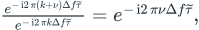
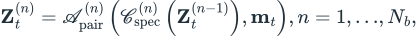
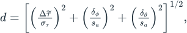

整体概括
先估计路径，不直接回归用户位置
作者把有噪的波束成形复数信道状态信息（CSI）与收发波束描述符作为输入，输出多径分量（MPC）集合：路径是否存在、直达或非直达，以及观测时延、接收机坐标系到达角（AoA）、全局坐标系出发角（AoD）。不估计路径增益或多普勒，非直达路径限于单次反射。预测的时延含接收机钟差，并不是可以无条件换成传播距离的纯时延。
对照原文证据
where c_{t,\ell}\in\{0,1\} denotes LoS and NLoS paths, respectively, while \phi^{\mathrm{B}}_{t,\ell} and \theta^{\mathrm{G}}_{t,\ell} are the receiver-frame AoA and global-frame AoD. We consider single-reflection NLoS paths and exclude path gains and Doppler from estimation.The observed delay \widetilde{\tau}_{t,\ell}=\tau_{t,\ell}+b_{t} includes the propagation delay \tau_{t,\ell} and receiver clock bias b_{t} .The decoded queries produce MPC predictions in parallel, following the set-prediction approach of [ 18 ] . Each query is mapped to existence, path-class, delay, AoA, and AoD predictions through separate output heads.路径、轨迹、地图是三种证据
估计的 MPC 分别喂给独立快照定位和因果无线同步定位与建图（radio SLAM）。在作者的射线追踪设定中，SCFT 比 ResNet 的快照和 SLAM 位置误差更低，轨迹也更稳定；但 ResNet 的虚拟锚点地图平均 GOSPA 更低。因而论文的证据支持改善位置估计，不支持所有地图品质指标随路径估计一起改善。
对照原文证据
Table IV and Fig. 3 show that SCFT achieves lower snapshot positioning errors than ResNet and SAGE. Although ResNet obtains a lower mean map GOSPA, SCFT achieves lower SLAM RMSE and RPE, higher association F1, and less variable trajectory errors. The snapshot-to-SLAM comparison reflects the combined effects of motion information, temporal filtering, clock and heading estimation, data association, and mapping constraints, rather than the contribution of NLoS mapping alone.Experiments on realistic ray-tracing data showed improved MPC set estimation over the evaluated baselines at a computational cost comparable to other learning-based methods. Using SCFT’s estimated MPCs for snapshot positioning and radio SLAM yielded lower positioning errors and more stable trajectories compared with the competing methods.Research gap
通信任务能用好信道，但并不直接给出路径几何
按作者的技术背景归纳，CSI 重建、均衡与反馈的目标不是逐径恢复位置约束；经典子空间、迭代或稀疏路线虽然可估时延与角度，联合估计却可能需要额外的搜索或细化步骤。SCFT 的回应不是换一个更大的 CSI 重建器，而是把存在性、类别和几何一起放到同一个路径集合预测问题中；这不是对整个领域的独立查新结论。
对照原文证据
However, these communication-oriented approaches generally do not explicitly recover the geometric multipath parameters, such as delay, AoA, and AoD, needed for positioning and radio SLAM. More recent studies have investigated learning-based methods for multipath parameter estimation [ 14 ] , including Transformer-based delay estimation [ 15 ] .Classical model-based methods such as MUSIC [ 5 ] , SAGE [ 6 ] , and ESPRIT [ 7 ] provide established approaches to multipath parameter estimation. Their application to joint delay and angular recovery can involve multidimensional searches or additional estimation stages, with performance potentially degrading under challenging propagation and noise conditions.We propose SCFT for joint path-level channel-parameter estimation in mmWave MIMO-OFDM systems, combining spectral convolution, beam-set attention, learnable multipath component (MPC) queries, and a permutation-invariant assignment loss.两条输入轴的秩序不同
子载波按频率排列，同一路径的复相位会随频率推进；选择出来的波束对则没有天然的行顺序。把两条轴拉平做全注意力，既付出对组合序列长度的二次开销，也没有直接表达这种差异。作者押注同一波束内的局部谱特征和同一频块内的跨波束交互就足以编码，再由查询访问全记忆补上路径级聚合。
对照原文证据
A direct application of self-attention would first flatten the antenna, subcarrier, and time dimensions into a single sequence. This leads to quadratic complexity in the resulting sequence length and becomes costly for large MIMO-OFDM observations. Such a formulation also does not explicitly exploit the separable spatial and frequency structure of multipath propagation.Rather than flattening frequency and beam-pair observations into a generic sequence, SCFT uses local convolution along the ordered spectral axis and set attention across the unordered beam-pair axis before decoding path-level representations. This design follows the separable frequency and directional structure induced by multipath propagation.The output of the N_{b} encoder blocks is layer-normalized and reshaped into a memory \mathbf{M}_{t}\in\mathbb{R}^{SJ\times d} , preserving all spectral and beam-pair tokens. The decoder uses M learnable MPC queries \mathbf{Q}^{(0)}\in\mathbb{R}^{M\times d} . At each of its R layers, self-attention among queries is followed by cross-attention with the encoder memory and feed-forward processing:算法主线

原图由 arXiv 加载；若未显示，可打开下方原图链接。
跟着原图读
- 先看左下输入
热块横轴是子载波序号 Nsc、纵轴是波束对 S，向后堆叠的两层为复数的实部与虚部。这是输入示意，没有色标或可读物理强度；收、发码本描述单独画在下方。
- 再沿中间到右侧
找紫色 Memory tokens 和来自左侧的绿色可学习查询，两个输入汇入橙框解码器。右侧两幅扇形分别是接收机系 AoA 与全局系 AoD，柱形和尖峰只是输出示意，不能读出概率或纳秒。
- 最后与正文对照
左上示意写了卷积、BN 与 Pool，并用不同形状记输入及描述符；正文 III-A/III-B 则明确写先做沿谱卷积，再做带掩码的波束集合注意力。图适合看整体数据流，具体张量及算子以正文原式为准。
不能把框内色块当实测样本或注意力权重，也不能依据示意图推断模型已经经过消融之外的硬件验收。
每个快照先规范化，再构造有物理身份的 token
对有效波束和子载波一起计算复幅值的均方根尺度，以实部和虚部保留相对幅度与相位。每个波束对沿频率切连续块，经共享编码后，加上由收发码本向量投影得到的描述符和频块位置嵌入；有效波束掩码随行传递。波束的物理身份来自码本描述符，而不是希望网络记住该波束排在哪一行。
对照原文证据
We normalize the complex beamformed channel observations at each snapshot by their root-mean-square magnitude over the selected beam pairs:This normalization removes a common amplitude scale while preserving relative amplitudes and phases.Each beam-pair CSI sequence is divided into J contiguous spectral patches. Let \mathbf{x}_{t,p}^{(j)} contain the real and imaginary samples of patch j\in\{1,\ldots,J\} . A shared patch encoder produces a d -dimensional token, augmented with beam-pair and spectral-position embeddings:where \mathrm{FFN}_{\mathrm{p}} is the beam-pair feed-forward network and \mathbf{m}_{t} masks padded beam pairs. Since no positional encoding is assigned to beam-pair rows,编码按轴交替；解码不先平均掉频块
正文中的编码块先在每个波束对内部做谱卷积，再在每个频块对有效波束做带掩码的自注意力。所有编好码的波束—频块 token 经归一化并展成一份记忆。可学习的 MPC 查询先彼此交换信息，再对全记忆做交叉注意力，并行交给不同输出头；路径角用单位圆表示以避免角度越界处的不连续。
对照原文证据
As illustrated in Fig. 1 , SCFT processes the ordered frequency response within each beam pair using local spectral convolution and combines information across unordered beam pairs through set attention.At each spectral patch j , the beam-pair tokens \widetilde{\mathbf{Z}}^{(n)}_{t,:,j,:} interact through masked self-attention followed by feed-forward processing:The output of the N_{b} encoder blocks is layer-normalized and reshaped into a memory \mathbf{M}_{t}\in\mathbb{R}^{SJ\times d} , preserving all spectral and beam-pair tokens. The decoder uses M learnable MPC queries \mathbf{Q}^{(0)}\in\mathbb{R}^{M\times d} . At each of its R layers, self-attention among queries is followed by cross-attention with the encoder memory and feed-forward processing:Each query is mapped to existence, path-class, delay, AoA, and AoD predictions through separate output heads. For \psi\in\{\phi^{\mathrm{B}},\theta^{\mathrm{G}}\} , angles are represented by unit vectors \widehat{\mathbf{u}}_{\psi,t,i}=[\cos\widehat{\psi}_{t,i},\sin\widehat{\psi}_{t,i}]^{T} to avoid angular wrap-around discontinuities.真值配对只发生在训练；推断直接筛掉不存在的查询
训练先做一对一最小代价分配，代价由标准化时延、路径类别和角度构成；配对决定哪个查询有路径，存在损失施于所有查询，类别与几何损失只作用于匹配项。推断没有标签或最优真值配对可用，只按存在概率阈值保留候选路径，恢复到观测时延尺度后交给后端。与训练损失不同，评价配对不看路径类别。
对照原文证据
The assignment in ( 8 ) uses a cost combining delay, path-class, and angular discrepancies. With \mathbf{u}_{\psi,t,\ell}=[\cos\psi_{t,\ell},\sin\psi_{t,\ell}]^{T} and standardized delay \bar{\tau} , this cost is defined aswhere \lambda_{\tau}^{a} , \lambda_{c}^{a} , \lambda_{\phi}^{a} , and \lambda_{\theta}^{a} are nonnegative assignment weights. The optimal assignment \xi_{t}^{\star} defines the existence target e_{t,i} , set to 1 for matched queries and 0 otherwise.Here \mathrm{SL1} denotes the Smooth-L1 loss, and the \lambda coefficients are nonnegative loss weights. The existence loss applies to all queries, whereas classification and geometric losses apply only to matched queries. At inference, queries with \widehat{p}_{t,i}\geq\gamma_{\mathrm{ex}} are retained, where \gamma_{\mathrm{ex}} is the existence threshold.We compute the generalized optimal sub-pattern assignment (GOSPA) metric [ 20 ] with (p,c,\alpha)=(2,5,2) and class-agnostic, one-to-one assignment cost \min(d,5)^{2} . Matches with d<5 determine micro-averaged detection F1 and matched-path delay RMSE and angular MAEs.快照假设零钟差，图优化把钟差当状态
快照方案用最早合格直达路径的观测时延和全局 AoD，加上已知高差反解位置；没有合格路径或有效几何时不出解。SLAM 以运动和历元 MPC 为测量，用因果图估计平面位置、朝向、钟差和代表垂直立面的虚拟锚点。直达候选经创新门限，反射路径与虚拟锚点做一对一关联；不是用未来轨迹再回填当前快照。
对照原文证据
For independent snapshot positioning, SCFT and ResNet use the earliest detected direct path, while the oracle uses the earliest true direct path. Since SAGE does not predict path classes, its earliest detected path is treated as a direct-path candidate. The position is determined from the selected path’s observed delay and global AoD, accounting for the known BS–UE height difference and assuming zero clock bias. Snapshots without an eligible path or valid range geometry are excluded.For radio SLAM, a causal factor-graph backend jointly estimates 2-D position, heading, receiver clock bias, and vertical-facade virtual anchors using motion and MPC measurements. The delay measurement model accounts for clock bias. Direct-path candidates undergo innovation gating, while single-reflection paths are associated one-to-one with virtual anchors. Candidate anchors are confirmed after three distinct associated observations.关键公式
相位增量连接了波形与卷积的选择
滞后相同且子载波间隔固定时，单条路径的复指数之比不再依赖当前子载波序号，所以一个共享谱核可以在不同频块学习重复出现的相位模式。该比值说的是单个路径项而非有噪多径叠加后的整条 CSI；路径叠加时不能直接对观测做同样的除法就声称读出了某一条路径。
对照原文证据
where \mathbf{W}_{d} projects the beam-pair descriptor and \boldsymbol{\eta}_{j} encodes the spectral position. The complex exponential associated with each path in ( 2 ) exhibits a consistent phase progression across subcarriers. For an integer subcarrier lag \nu ,This structure motivates shared convolution along the spectral dimension. Within each beam pair p , encoder block n appliesThe resulting observations exhibit a frequency-dependent phase progression within each beam pair and directional variations across the selected beam pairs.置换约束与评估距离不要混进训练损失
同一组波束换行时，复数观测、描述符和掩码必须用同一个置换；对频块却保留原位置。评估里用训练时延标准差和角尺度把各项变成无量纲距离，再按截断和未匹配惩罚统计集合误差。这个距离不是训练的分配代价；后者另有类别项，并且角度相似度来自单位向量。
对照原文证据
where \mathrm{FFN}_{\mathrm{p}} is the beam-pair feed-forward network and \mathbf{m}_{t} masks padded beam pairs. Since no positional encoding is assigned to beam-pair rows, the attention block is permutation-equivariant: \mathcal{A}_{\mathrm{pair}}(\mathbf{P}\mathbf{Z},\mathbf{P}\mathbf{m}_{t})=\mathbf{P}\mathcal{A}_{\mathrm{pair}}(\mathbf{Z},\mathbf{m}_{t}) . Spectral convolution applies the same operations independently to each beam pair, while decoder cross-attention is invariant to a common permutation of its keys and values. Consequently, SCFT satisfies ( 5 ).The assignment in ( 8 ) uses a cost combining delay, path-class, and angular discrepancies. With \mathbf{u}_{\psi,t,\ell}=[\cos\psi_{t,\ell},\sin\psi_{t,\ell}]^{T} and standardized delay \bar{\tau} , this cost is defined aswhere \sigma_{\tau}=101.99 ns is the training-delay standard deviation, s_{a}=10^{\circ} , and \delta_{\phi},\delta_{\theta} are the minimum wrapped angular errors under the exact front/back array-response equivalence in their respective frames. We compute the generalized optimal sub-pattern assignment (GOSPA) metric [ 20 ] with (p,c,\alpha)=(2,5,2) and class-agnostic, one-to-one assignment cost \min(d,5)^{2} . Matches with d<5 determine micro-averaged detection F1 and matched-path delay RMSE and angular MAEs. GOSPA is reported as mean and sample standard deviation.同一子载波间隔的相位推进

两项指数的比消去当前子载波序号；只剩子载波间隔、滞后和观测时延。若滞后为零，指数为零、比值为一，这只是读式示意，不是实验。
符号与实现提醒
- k、ν
- 当前子载波序号和整数滞后，无量纲。
- Δf
- 子载波间隔，Hz。
- τ̃
- 单条路径的观测时延，用秒，含接收机钟差。
乘积无量纲，指数提供的是相位而非幅值。不能把复数叠加的实测 CSI 当成单独指数，也不能在指数里把纳秒数值直接当秒。
无序波束对的整组置换条件
交换两条波束的行时，必须交换各自观测、码本描述符和有效位；结果集合应保持不变。如果只交换观测而保留描述符，相当于改变信号来自哪条波束，不是本式的变换。
符号与实现提醒
- fΘ
- 参数 Θ 的路径集合估计器。
- P
- S×S 行置换矩阵。
- Xₜ、Dₜ、mₜ
- 快照 t 的 CSI、波束描述符和有效位，首维皆为 S。
式中没有说频率轴可任意置换；频块顺序是谱卷积的物理输入。
顺着两个不同的轴依次更新

先对当前波束内部的连续频块做局部谱卷积，再对同频块的各个有效波束做集合注意力。输出仍保留全部波束—频块位置；交换两条有效波束，编码行也按同样方式交换，解码后路径集合才保持不变。
符号与实现提醒
- Zₜ⁽ⁿ⁾
- 第 n 块的 token 张量，波束对 × 频块 × 特征。
- Cspec
- 在每条波束频轴上共享的谱卷积块。
- Apair
- 在每个频块上使用掩码的波束集合注意力。
- mₜ、Nᵦ
- 有效波束指示和编码块数。
默认解释以正文 III-A/III-B 为准，原框架图左上还画了波束域卷积、BN 与 Pool，不应从图例反向替换正文模型。
评价距离不是物理长度

把时延误差按训练标准差缩放，AoA 与 AoD 误差按共同角尺度缩放。若只有时延误差且恰等于其标准差，则距离等于一；这表示一次归一化单位，不是一米或一纳秒。
符号与实现提醒
- Δτ̃、στ
- 预测与真值观测时延之差和训练时延标准差，单位一致。
- δφ、δθ
- 各自坐标系下经折返并考虑阵列前后等价的最小角误差。
- sₐ
- 角尺度，与两个角误差同单位。
- d
- 组合无量纲距离，评估 GOSPA 的输入。
截断和遗漏处罚在评价定义中，不能把匹配几何距离误报为所有路径的 RMSE，也不能用它替代类别参与的训练分配代价。
实验怎么做
接收位置不重合，不等于换了地图
数据是 DeepMIMO v4 的 O1 28 城市射线追踪场景；训练、验证、校准、测试按不同接收位置分开，样本数分别为 35000、5000、5000、5000，下游另有单独轨迹。各前端共享按带噪平均能量选出的波束对；神经基线用相同训练目标与日程、相近参数量。该设计控制了输入和基本训练口径，但不是独立城市或实采设备上的迁移试验。
对照原文证据
To evaluate the performance of the proposed framework, we use realistic ray-tracing data representing an outdoor urban environment, specifically the O1 28 scenario from DeepMIMO v4 [ 19 ] . Table I summarizes the experimental configuration. Training, validation, calibration, and test sets use distinct receiver locations, while positioning and SLAM are evaluated on a separate trajectory. For each observation, the S RX–TX DFT beam pairs with the highest noisy average energy are selected and shared across estimators.The learning-based baselines (flat Transformer, ResNet, vanilla CNN, and spectral U-Net) use the same training objective and schedule as SCFT, with comparable parameter counts.Train/val./cal./test samples 35000/5000/5000/5000 SNR; MPC queries基线与指标分开读，计算量不是推断延迟
神经基线包括平坦 Transformer、ResNet、普通 CNN 和谱 U-Net；SAGE 和联合 OMP 做联合搜索，MUSIC 和 ESPRIT 从频域子空间估时延。经典方法统一以 AIC 估路径数，并用时延约束细化角估计。GOSPA 统计路径集合整体误差；F1 微平均，时延 RMSE 和角度 MAE 仅用几何匹配通过的路径。GFLOPs 是每个样本的运算量，不是目标硬件的毫秒数。
对照原文证据
The learning-based baselines (flat Transformer, ResNet, vanilla CNN, and spectral U-Net) use the same training objective and schedule as SCFT, with comparable parameter counts. SAGE [ 6 ] and joint OMP [ 8 ] perform joint delay–angle searches, whereas MUSIC [ 5 ] and ESPRIT [ 7 ] estimate delays from frequency-domain subspaces. All classical methods use the Akaike information criterion (AIC) for path-count estimation and delay-conditioned beamspace angular refinement.where \sigma_{\tau}=101.99 ns is the training-delay standard deviation, s_{a}=10^{\circ} , and \delta_{\phi},\delta_{\theta} are the minimum wrapped angular errors under the exact front/back array-response equivalence in their respective frames. We compute the generalized optimal sub-pattern assignment (GOSPA) metric [ 20 ] with (p,c,\alpha)=(2,5,2) and class-agnostic, one-to-one assignment cost \min(d,5)^{2} . Matches with d<5 determine micro-averaged detection F1 and matched-path delay RMSE and angular MAEs. GOSPA is reported as mean and sample standard deviation.TABLE II: MPC estimation performance. Delay and angular errors are evaluated over matched paths; GFLOPs are reported per sample.下游比较按同轨迹配对，但快照只比较共同可解样本
下游是一条 100 位姿的轨迹配 50 组共同噪声实现；快照 RMSE 只用各方法均有解的 4,980 个样本（共 5,000），不替代可用率。Oracle 提供真值路径关系与几何给相同后端，用来分辨前端误差和后端/观测模型的限制；即使是真值路径，独立快照仍按零钟差解算。
对照原文证据
The downstream evaluation uses a separate 100-pose trajectory with 50 paired noisy channel realizations.For independent snapshot positioning, SCFT and ResNet use the earliest detected direct path, while the oracle uses the earliest true direct path. Since SAGE does not predict path classes, its earliest detected path is treated as a direct-path candidate. The position is determined from the selected path’s observed delay and global AoD, accounting for the known BS–UE height difference and assuming zero clock bias. Snapshots without an eligible path or valid range geometry are excluded. Snapshot RMSE is computed over the 4,980 cases, out of 5,000, for which all four methods yield valid positions.We also evaluate both tasks using oracle MPCs, providing ground-truth path classes and geometric parameters to the same positioning and SLAM backends.复现入口是场景名与指标协议，不是已跑通的工程
可从实验设置表回查码本、训练配置和损失权重，从评价段回查路径匹配与下游协议。已读取的版本未说明独立训练种子的波动、各方法逐阶段实测耗时或对应本实验的代码与划分清单；单样本运算量、表中样本标准差和重复生成信道噪声都不能补上这些信息。
提升与证据
集合误差改善不要求每个匹配量都最好
表 II 中 SCFT 的 GOSPA 为 2.001 ± 2.199，ResNet 为 2.303 ± 2.301，作者报告相对下降 13.1%；SCFT 与 ResNet 的 F1 分别为 0.942 和 0.932。SAGE 在匹配路径上的 AoA MAE 反而更低（4.04° 对 5.31°），却有更差的 GOSPA 和 F1。结论是同测例里整组路径的恢复更好，不是每项测量都胜出；离散程度也不是均值的置信区间。
对照原文证据
SCFT 1.490 3.621 \mathbf{2.001\!\pm\!2.199} 0.942 16.80 5.31 2.26 Flat Transformer 1.491 4.081 2.797\!\pm\!2.487 0.915 20.67 7.69 3.06 ResNet 1.520 3.614 2.303\!\pm\!2.301 0.932 17.60 5.93 2.94SAGE – – 6.245\!\pm\!1.960 0.577 50.18 4.04 7.50Experiments on realistic ray-tracing data show that SCFT reduces the generalized optimal sub-pattern assignment error by 13.1% compared with ResNet, the strongest competing baseline.Matches with d<5 determine micro-averaged detection F1 and matched-path delay RMSE and angular MAEs. GOSPA is reported as mean and sample standard deviation.消融中删掉波束描述符比更换谱混合伤得多
完整方案 GOSPA 为 2.001；以全谱注意力替换局部谱卷积后为 2.351，后续无跨波束注意力变体为 2.406，无波束描述符变体为 7.247。原文说明后面的删减从全谱注意力变体起比较，不是从完整方案开始的独立正交因子实验。SCFT 每样本 3.621 GFLOPs，低于平坦 Transformer 的 4.081，不过与 ResNet 的 3.614 相当。
对照原文证据
Variant GFLOPs GOSPA F1 SCFT (spectral convolution) 3.621 2.001 0.942 Full spectral attention 3.777 2.351 0.938 No cross-pair attention 3.681 2.406 0.931 No beam descriptors 3.777 7.247 0.604Table III examines the contribution of each architectural component. Replacing local spectral convolution with full spectral attention increases GOSPA, with little change in F1. Starting from this full-attention variant, removing cross-pair attention further increases GOSPA, while removing the beam descriptors produces the largest degradation in both metrics. These results support combining local spectral processing with descriptor-conditioned interactions across beam pairs.SCFT 1.490 3.621 \mathbf{2.001\!\pm\!2.199} 0.942 16.80 5.31 2.26 Flat Transformer 1.491 4.081 2.797\!\pm\!2.487 0.915 20.67 7.69 3.06 ResNet 1.520 3.614位置和地图改善不绑定，尾部要回看分布
相对 ResNet，快照 RMSE 从 3.13 降至 2.55 m（18.5%），SLAM RMSE 从 5.09 降至 1.78 m（65.0%）。表 IV 给出均值和离散程度，图中的带是噪声实现间的逐点标准差。与此同时，SCFT 的地图 GOSPA 为 4.94 m，高于 ResNet 的 3.997 m。快照到 SLAM 也同时改了运动约束、钟差处理与数据关联，不能把落差归因于反射建图一项。
对照原文证据
Snapshot RMSE \mathbf{2.55\!\pm\!0.16} 3.13\!\pm\!0.14 35.30\!\pm\!1.11 0.78\!\pm\!0.41 SLAM RMSE \mathbf{1.78\!\pm\!0.37} 5.09\!\pm\!7.93 25.79\!\pm\!85.03 0.83\!\pm\!0.32 RPE \mathbf{0.47\!\pm\!0.05} 0.94\!\pm\!0.87 21.86\!\pm\!119.15 0.18\!\pm\!0.03 Map GOSPA 4.94\!\pm\!1.12 \mathbf{3.997\!\pm\!1.08}We further demonstrate this advantage in independent snapshot positioning and radio SLAM, where SCFT reduces position RMSE by 18.5% and 65.0%, respectively, relative to ResNet.Fig. 3: Positioning and radio SLAM results: (a) snapshot positioning error, (b) radio SLAM position error, and (c) representative trajectories and virtual-anchor maps. Panels (a) and (b) show mean empirical CDFs with pointwise standard-deviation bands across 50 noisy realizations. Panel (c) shows a common realization selected based on proximity to the method-wise median SLAM RMSE and map GOSPA.Table IV and Fig. 3 show that SCFT achieves lower snapshot positioning errors than ResNet and SAGE. Although ResNet obtains a lower mean map GOSPA, SCFT achieves lower SLAM RMSE and RPE, higher association F1, and less variable trajectory errors. The snapshot-to-SLAM comparison reflects the combined effects of motion information, temporal filtering, clock and heading estimation, data association, and mapping constraints, rather than the contribution of NLoS mapping alone.
原图由 arXiv 加载；若未显示，可打开下方原图链接。
跟着原图读
- 先读图例和坐标
横轴 SNR 为 dB，纵轴 GOSPA 无量纲且低更好；共用图例在原文整图。蓝圆 SCFT、绿上三角 ResNet、黄方块 Flat Transformer、粉菱形 CNN、橙下三角 U-Net。
- 比较量与子图要区分
在画出的各组中蓝圆低于其余学习法；本面板综合了位置偏差与漏检、虚警的集合惩罚。原图 (a) 的时延 RMSE 单位 ns，(b)(c) 的 AoA/AoD MAE 单位度；原图图例中的实/虚线只在这三面板区分 LoS/NLoS。
蓝线更低不是每条路径都估得更准。表 II 的 SAGE 匹配 AoA MAE 反例不在该图中；本图也不提供显著性检验。

原图由 arXiv 加载；若未显示，可打开下方原图链接。
跟着原图读
- 先辨横轴尺度
横轴是位置误差（m），按十倍数对数展开，纵轴是经验累积比例。固定一个误差门限向上读，纵值越高表示落在门限内的比例越大；蓝圆为 SCFT，绿三角 ResNet，橙右三角 SAGE，紫菱形虚线 Oracle。
- 再读色带与其他分图
色带是配对噪声实现间的逐点标准差，不是置信区间。原图 (a) 是快照 CDF；(c) 用全局 x、y（m）画选出的共同实现，黑虚线是真轨迹、黑星是真虚拟锚、黑方块是基站。
(c) 是按距离各方法中位数表现选出的示例，而非所有运行；(b) 的轨迹位置误差分布不能判定哪一种方法的虚拟锚地图更好。
局限与追问
作者明确未测试新环境、阵列或码本
即使位置划分互斥，当前评估也仍是同一射线追踪环境的观测；作者把环境、天线配置与波束码本外推列为后续工作。模型目标仅纳入单反射非直达路径，时延也包含接收机钟差。因而现有位置误差不等于多次反射、真实射频缺陷或跨设备部署下的误差承诺。
对照原文证据
Generalization beyond the considered environment, antenna configuration, and beam codebook remains untested and will be investigated in future work.where c_{t,\ell}\in\{0,1\} denotes LoS and NLoS paths, respectively, while \phi^{\mathrm{B}}_{t,\ell} and \theta^{\mathrm{G}}_{t,\ell} are the receiver-frame AoA and global-frame AoD. We consider single-reflection NLoS paths and exclude path gains and Doppler from estimation.The observed delay \widetilde{\tau}_{t,\ell}=\tau_{t,\ell}+b_{t} includes the propagation delay \tau_{t,\ell} and receiver clock bias b_{t} .本站追问：改善来自路径更准，还是更容易被接受？
把两个前端的输出送到完全相同的后端，逐步固定检测存在性、类别与观测几何，只交换其中一组信息。按位置、路径类型和噪声实现分别记录接收率、错误关联率、误差尾部和地图 GOSPA。若固定关联后轨迹差距收缩，而实测的地图差距仍保留，就能区分更稳定的路径选择与更准确的地图；目前数字不能给出这种归因。
连接你的研究
建议：用留场景实验检验波束描述符究竟学到了什么
以共同的前端输入和后端代价复做完整模型、去描述符模型与平坦基线；按街区或基站站点整组留出，并另做换码本测试。随机置换同一快照的波束行及其配套输入作为单元测试。在固定路径数上限和估算算力下，交付集合 GOSPA、每类匹配率、解可用率及位置误差分位，分开报同域、跨域和缺波束结果。
建议：接入 GNSS 辅助定位时先做时钟与残差对照
把毫米波观测当作独立几何补充，不替代 GNSS 的传播误差模型。在有高精参考轨迹的遮挡路段，对比纯 GNSS、GNSS 加直达无线约束、再加入反射约束三组；统一时钟基准和数据关联开销。交付水平误差尾部、解连续性、拒绝观测数和轨迹级配对差异；若只见平均误差下降而失解率上升，不能判定融合净获益。
来源与边界
原图来自固定版本的 arXiv 官方图源，作者及图注已保留；外部嵌入不自动授予转载权。本站不镜像作者图片、PDF 或全文，另行转载须核对许可。外部原图受读者网络条件影响；图后解说由 AI 生成，仍需回原文核验。该版本标注 arXiv 非独占分发许可，并非 CC BY。
对照原始英文摘要
收录历史：2026-11-14
原文许可：查看本版本许可 ↗；外部嵌入不等于任意转载授权。